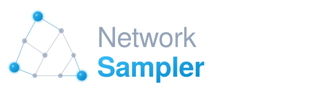

NetworkSampler: smart networks sampling
The library purpose
NetworkSampler is a Python package for sampling network nodes using space-filling designs. It works by minimizing the geodesic distance of the sample in the network, and maximizing the coverage over the graph.
This package is particularly helpful with semi-supervised machine learning approaches: with this package you can select a sample of nodes to be manually labeled, to extend the classification all over the network via label propagation. The space-filling sampling strategy ensures that the selected seed nodes are well distributed across the network, leading to more accurate and reliable predictions compared to traditional sampling methods.
For more details check the publication:
del Gobbo E., Fontanella L., Ippoliti L., Di Zio S., Fontanella S., Cucco A. (2026). A space-filling sampling approach for collective classification of social media data. Advances in Data Analysis and Classification. https://doi.org/10.1007/s11634-026-00670-z
Website (including documentation): https://edgresearch.github.io/pylib_networksampler
Bug reports: https://github.com/edgresearch/pylib_networksampler/issues
Pip Package: https://pypi.org/project/networksampler
Simple example
Extract a sample that maximizes the coverage of a network:
import networksampler
import networkx as nx
# Generate an adjacency matrix of 1000 nodes full connected
G = nx.gaussian_random_partition_graph(1000, 500, 100, 0.20, 0.1)
A = nx.adjacency_matrix(G).todense()
# Extract the sample:
# nodes number = 10
# p = -4 and q = 4
# r = 0.1
networksampler.sa_sampling(A, 10, -4, 4, 0.1)
(array([ 14, 135, 213, 256, 345, 560, 678, 690, 900, 967]),
7.727146854012883)
Install
Install the latest version of NetworkSampler:
$ pip install networksampler
Bugs
Please report any bugs that you find here. Or, even better, fork the repository on GitHub and create a pull request (PR). We welcome all changes, big or small, to improve the library performance.
How to cite this package in publications?
If you use this package in your research, please cite the following paper:
del Gobbo E., Fontanella L., Ippoliti L., Di Zio S., Fontanella S., Cucco A. (2026).
A space-filling sampling approach for collective classification of social media data.
Advances in Data Analysis and Classification.
https://doi.org/10.1007/s11634-026-00670-z
BibTeX:
@article{delgobbo2026spacefilling,
author = {del Gobbo, Emiliano and Fontanella, Lara and Ippoliti, Luigi and Di Zio, Simone and Fontanella, Sara and Cucco, Alex},
title = {A space-filling sampling approach for collective classification of social media data},
journal = {Advances in Data Analysis and Classification},
year = {2026},
doi = {10.1007/s11634-026-00670-z},
url = {https://doi.org/10.1007/s11634-026-00670-z}
}
RIS:
TY - JOUR
AU - del Gobbo, Emiliano
AU - Fontanella, Lara
AU - Ippoliti, Luigi
AU - Di Zio, Simone
AU - Fontanella, Sara
AU - Cucco, Alex
PY - 2026
TI - A space-filling sampling approach for collective classification of social media data
T2 - Advances in Data Analysis and Classification
DO - 10.1007/s11634-026-00670-z
UR - https://doi.org/10.1007/s11634-026-00670-z
ER -
License
The library is released under the GNU LESSER GENERAL PUBLIC LICENSE v3.
The library logo has Proprietary license and cannot be used for other projects. If you fork the project, you MUST indicate it is a derivate project and not use the logo to identify the project.
Copyright (C) 2021-2026 Emiliano del Gobbo
Emiliano del Gobbo <emidelgo@gmail.com>
Check the License Page for details.